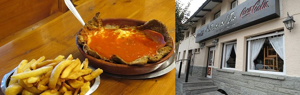
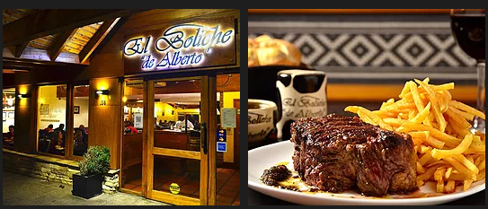
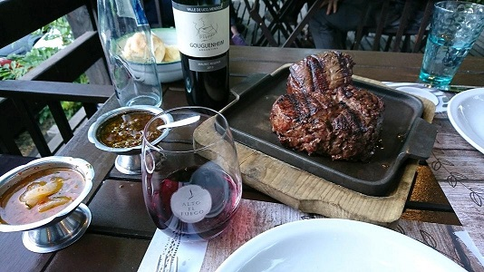
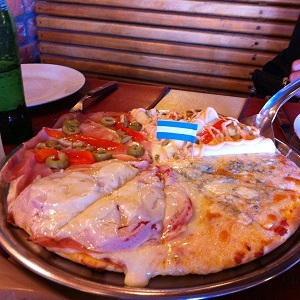
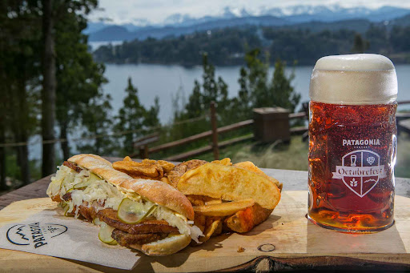
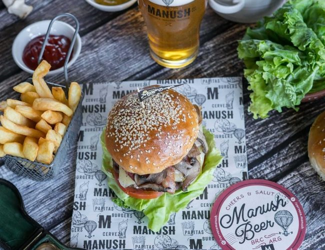

La Fonda del Tío, Mitre 415: Ver mas La milanesa mas famosa y grande de Argentina.
El Boliche de Alberto - Pastas Enflein 143: Ver mas Parrillas: Enflein 158, Villegas 347.
Parrilla Alto el Fuego, 20 de febrero 451: Ver mas 
Mundo de la pizza y pastas. Mitre 759: Ver mas
Cervecería Patagonia - Circuito chico km 24,5: Ver mas
Cerveceria Manush - Dr. Juan Javier Neumeyer 20: Ver mas
Consulte por otras alternativas de excursiones según la estación del año. Disponemos de servicio tercerizado de alquileres de autos.